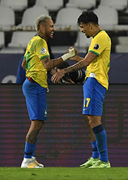
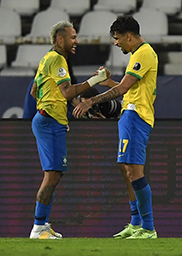

Neymar Jr
Neymar came into prominence at Santos, where he made his professional debut aged 17. He helped the club win two successive Campeonato Paulista championships, a Copa do Brasil, and the 2011 Copa Libertadores.


Neymar came into prominence at Santos, where he made his professional debut aged 17. He helped the club win two successive Campeonato Paulista championships, a Copa do Brasil, and the 2011 Copa Libertadores.

Messi, 34, also paid tribute to the memory of Maradona, who died aged 60 last November. Argentina's success over the Brazilians in Rio was not just Messi's first major trophy but his country's first continental honour in 28 years.

Ronaldo became Manchester United's first Portuguese player when he signed before the 2003–04 season. His transfer fee of £12.24 million made him, at the time, the most expensive teenager in English football history.

Paulo Exequiel Dybala (born 15 November 1993) is an Argentine professional footballer who plays as a forward for Serie A club Juventus and the Argentina national team.

Mesut Özil (German pronunciation: [ˈmeːzut ˈøːzil], born 15 October 1988) is a German professional footballer who plays as an attacking midfielder for Süper Lig club Fenerbahçe. Nicknamed "The Assist King".

Mauro Emanuel Icardi is an Argentine professional footballer who plays as a striker for Ligue 1 club Paris Saint-Germain and the Argentina national team. Icardi began his footballing career at La Masia, the youth system of La Liga club Barca.

Ángel Fabián Di María is an Argentine professional footballer who plays for Ligue 1 club Paris Saint-Germain and the Argentina national team. He can play as either a winger or attacking midfielder.

Kylian Mbappé Lottin (born 20 December 1998) is a French professional footballer who plays as a forward for Ligue 1 club Paris Saint-Germain and the France national team. Mbappé began his senior career with Ligue 1 club Monaco.

Mohamed Salah Hamed Mahrous Ghaly is an Egyptian professional footballer who plays as a forward for Premier League club Liverpool and captains the Egypt national team. Considered one of the best players in the world.

Harry Edward Kane MBE is an English professional footballer who plays as a striker for Premier League club Tottenham Hotspur and captains the England national team.

Kevin De Bruyne is a Belgian professional footballer who plays as a midfielder for Manchester City.He is one of just three players to have won the PFA Players' Player of the Year award and the only midfielder to have done so in English football history.

Philippe Coutinho Correia is a Brazilian professional footballer who plays as an attacking midfielder or winger for Spanish club Barcelona and the Brazil national team. He is known for his combination of vision, passing, dribbling .
After 28 years of wait, Argentina finally has a trophy as it beat Brazil in the final of Copa America 2021 at the Maracana Stadium in Rio de Janeiro, Brazil. It is Argentina's first title since 1993 and 15th Copa America title. Angel Di Maria's 22nd minute strike proved enough as the Albiceleste showed great composure and determination in defence to keep the Selecao out, a feat none of the teams have achieved in this edition of the tournament..

 
